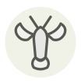

American lobster
Homard américain (canadien)
| Latin name | Homarus americanus |
|---|---|
| Family | Shellfish & molluscs |
| Origin | Northwest Atlantic, Maine to Nova Scotia |
| Season | November – April |
| Flavour | Sweet · Marine · Rich |
| Typical price | 25–45 €/kg |
What it is
It is a different animal from the European homard, and its year falls in two: after the summer moult a new-shell lobster has taken on seawater to stretch its shell, and yields something like 15 to 18 percent meat where a hard-shell gives 20 to 28. On the docks buyers judge it by squeezing the shell behind the claw, never by weight.
In the kitchen
Press the shell behind the claw: if it flexes, it is a new-shell — poach it briefly and eat it plain, because it will not take a roast or a grill without going to threads. Keep hard-shell for anything that meets direct heat.
Goes with
Butter Tarragon Cognac Cream Lemon Corn Chives Celery
Same species
In season alongside
Brill Cuttlefish King crab Splendid alfonsino (kinmedai) Hairy crab Monkfish
Something wrong here, or missing? Tell us